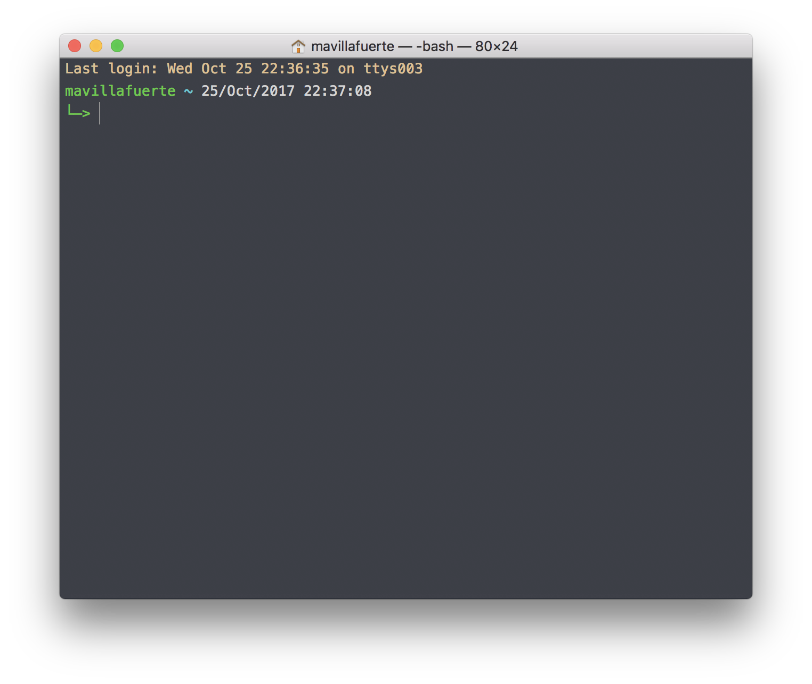
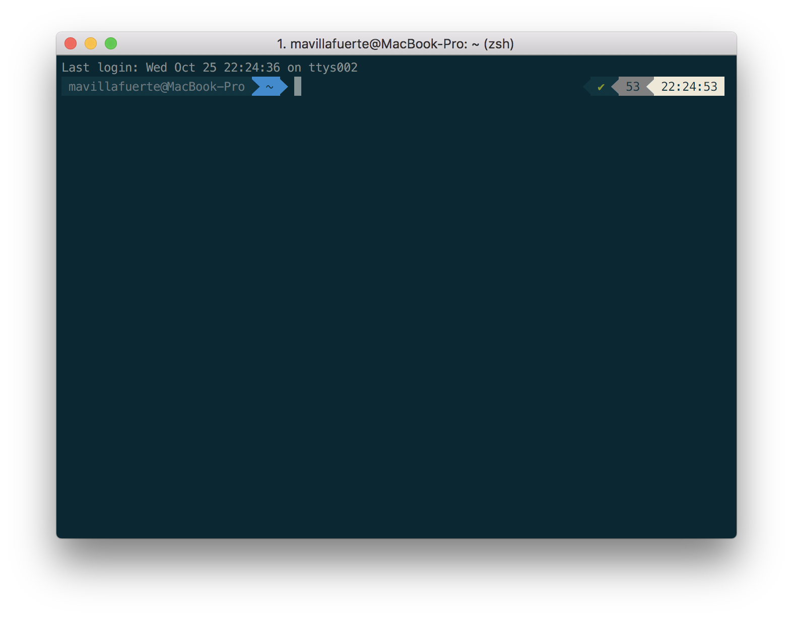

1. Home Directory
sudo ditto -rsrc /Users/mavillafuerte /Volumes/Data/mavillafuerte2. Homebrew
brew update
brew upgrade
brew tap
brew cask install java8
brew install maven
brew install gradle
brew install bash-completion
brew install nmap
brew cask install atom
brew cask install google-chrome
brew cask install intellij-idea-ce
brew cask install virtualbox
#Descarga la última versión de java
brew cask install java
#Font
brew cask install font-hackcurl -sL install-node.now.sh/lts | sh
curl --compressed -o- -L https://yarnpkg.com/install.sh | bash3. Java
Java 8
wget --no-check-certificate --no-cookies \
--header "Cookie: oraclelicense=accept-securebackup-cookie" \
--progress=dot:giga \
https://download.oracle.com/otn-pub/java/jdk/8u191-b12/2787e4a523244c269598db4e85c51e0c/jdk-8u191-linux-x64.tar.gz
sudo tar xvf jdk-8u191-linux-x64.tar.gz -C /usr/local/share/
sudo ln -sf /usr/local/share/jdk1.8.0_191/bin/java /usr/local/bin/java
java -versionJava 11
wget --no-check-certificate --no-cookies \
--header "Cookie: oraclelicense=accept-securebackup-cookie" \
--progress=dot:giga \
https://download.oracle.com/otn-pub/java/jdk/11.0.1+13/90cf5d8f270a4347a95050320eef3fb7/jdk-11.0.1_linux-x64_bin.tar.gz
sudo tar xvf jdk-11.0.1_linux-x64_bin.tar.gz -C /usr/local/share/Gradle
wget --progress=dot:giga \
https://services.gradle.org/distributions/gradle-4.2-all.zip
sudo unzip gradle-4.2-all.zip -d /usr/local/share/
sudo ln -sf /usr/local/share/gradle-4.2/bin/gradle /usr/local/bin/gradle
gradle -version
gradle wrapper --gradle-version 4.2Maven
wget --progress=dot:giga \
http://www-us.apache.org/dist/maven/maven-3/3.6.0/binaries/apache-maven-3.6.0-bin.tar.gz
sudo tar xvf apache-maven-3.6.0-bin.tar.gz -C /usr/local/share/
sudo ln -sf /usr/local/share/apache-maven-3.6.0/bin/mvn /usr/local/bin/mvn
mvn -v4. Git
git config
git config --global pull.ff only # Disallows non ff merges on pull. Overrides merge.ff when pulling
git config --global merge.ff false # even create extra merge commit when fast forward merge would be possible
git config --global pull.rebase true # set up pull to rebase instead of mergegit aliases
git config --global alias.alias "!git config -l | grep alias | cut -c 7-"
git config --global alias.br "branch -a -v"
git config --global alias.ca "commit --amend"
git config --global alias.cane "commit --amend --no-edit"
git config --global alias.ci "commit"
git config --global alias.ck "checkout"
git config --global alias.cl "clone"
git config --global alias.conf "config --global --list"
git config --global alias.dw "diff --word-diff=color"
git config --global alias.dw-1 "diff --word-diff=color HEAD^"
git config --global alias.dw-2 "diff --word-diff=color HEAD^^"
git config --global alias.f "fetch"
git config --global alias.ll "log --graph"
git config --global alias.llf "log --graph --first-parent"
git config --global alias.lld "log --graph --date-order"
git config --global alias.llp "log --graph -p"
git config --global alias.lls "log --graph --stat"
git config --global alias.llive "!f() { while :; do clear; git ll -$1; sleep 1; done }; f"
git config --global alias.ph "push"
git config --global alias.pl "pull --rebase"
git config --global alias.ppl "!git remote update --prune && git pull --rebase"
git config --global alias.ra "remote add"
git config --global alias.rev "merge --no-ff --no-commit"
git config --global alias.rr "remote remove"
git config --global alias.sl "stash list"
git config --global alias.slp "stash list --word-diff=color -p"
git config --global alias.sls "stash list --stat"
git config --global alias.st "status"
git config --global alias.tree "log --all --graph --decorate --oneline --simplify-by-decoration"
git config --global alias.bcurrent "rev-parse --abbrev-ref HEAD"git color
git config --global color.branch "auto"
git config --global color.branch.current "green"
git config --global color.branch.local "cyan"
git config --global color.branch.remote "white"
git config --global color.decorate.branch "green"
git config --global color.decorate.head "white"
git config --global color.decorate.remote "yellow"
git config --global color.decorate.stash "yellow"
git config --global color.decorate.tag "yellow"
git config --global color.diff "auto"
git config --global color.diff.context "102"
git config --global color.diff.frag "080"
git config --global color.diff.func "176"
git config --global color.diff.meta "016"
git config --global color.diff.new "157 016"
git config --global color.diff.old "210 016"
git config --global color.interactive "auto"
git config --global color.interactive.error "normal"
git config --global color.interactive.header "normal"
git config --global color.interactive.help "normal"
git config --global color.interactive.prompt "normal"
git config --global color.pager "true"
git config --global color.status "auto"
git config --global color.status.added "114"
git config --global color.status.branch "016 068"
git config --global color.status.changed "210"
git config --global color.status.header "102"
git config --global color.status.nobranch "bold ul blink 209"
git config --global color.status.untracked "221"
git config --global color.ui "auto"git format
git config --global format.pretty "%C(045)%h%C(reset) %C(255)%s%C(reset) %C(auto)%D%C(reset) %C(190 dim)%an%C(reset) %C(046 dim)%ar%C(reset) %+b"git user
git config --global user.email "mivimur@hotmail.com"
git config --global user.name "Miguel Villafuerte"git ignore
git config --global core.excludesFile ~/.gitignore~/.gitignore
### Maven ###
target/
### Gradle ###
.gradle
gradlew.bat
!gradle/wrapper/gradle-wrapper.jar
### STS ###
.apt_generated
.classpath
.factorypath
.project
.settings
.springBeans
### IntelliJ IDEA ###
.idea
*.iws
*.iml
*.ipr
### NetBeans ###
nbproject/private/
build/
nbbuild/
dist/
nbdist/
.nb-gradle/git commit template
git config --global commit.template ~/.gitmessage~/.gitmessage
# feature( ) :
# - new feature for the user, not a new feature for build script.
# fix( ) :
# - bug fix for the user, not a fix to a build script.
# docs( ) :
# - changes to the documentation.
# style( ) :
# - formatting, missing semi colons, etc; no production code change.
# refactor( ) :
# - refactoring production code, eg. renaming a variable.
# test( ) :
# - adding missing tests, refactoring tests; no production code change
# chore( ) :
# - updating grunt tasks etc; no production code change.
# Jira: #5. Terminal
bash_aliases
alias v-='vi -' # redirect output to vim
alias ..='cd ..'
alias ..2='cd ../..'
alias desk='cd ~/Desktop'
alias gitlab='cd ~/Projects/Gitlab'
alias ll='ls -la'
alias oa='atom .'
alias of='open .'
alias oi='idea .'
alias projects='cd ~/Projects'
alias newproject='mkdir -p src/{main,test}/{java,resources} src/main/java/com/mvillafuertem'
alias workspace='cd ~/Workspace'
alias ppwd='cd `pbpaste`'
alias hound='grep -Hrn --color $1 $2'
### Gradle ###
alias kalias="cat ~/.bash_aliases | grep gradlew"
alias gdlcb='./gradlew clean build'
alias gdltc='./gradlew test --continuous'
alias gdltj='./gradlew test jacocoTR --continuous'
### Maven ###
alias malias="cat ~/.bash_aliases | grep mvn"
alias mvncc='mvn clean compile'
alias mvnci='mvn clean install'
alias mvncis='mvn clean install -Dmaven.test.skip'
alias mvnco='mvn clean test cobertura:cobertura'
alias mvnct='mvn clean test'
alias mvncto='mvn -o clean test'
alias mvnda='mvn dependency:analyze'
alias mvndl='mvn dependency:list'
alias mvndt='mvn dependency:tree'
alias mvndu='mvn versions:display-dependency-updates'
alias mvnpu='mvn versions:display-plugin-updates'
alias mvnsr='mvn surefire-report:report'
alias mvnso='mvn sonar:sonar'
alias mvndlfilter='mvn dependency:list -Dsort=true |
grep "^\[INFO\] " |
awk '{print $2}' |
cut -f1-4 -d: |
sort |
uniq |
cut -f1-3 -d: |
uniq -c |
grep -v '^ *1 '
alias mvn2grdlversions="mvn dependency:list -Dsort=true | grep '^\[INFO\] ' | awk '{print \$2}' | cut -f2,4 -d: | sort | uniq | awk -F':' '{q=\"\x27\"; print q\$1 q \"|:\" q\$2q\",\" }' | column -t -s'|'"
alias mvn2grdllibs="mvn dependency:list -Dsort=true | grep '^\[INFO\] ' | awk '{print \$2}' | column -t -s: | awk '{q=\"\x27\";print q\$2q \"|:\"q\$1 \":\" \$2 \":\$versions.\"\$2q\",\"}' | sort | uniq| column -t -s'|'"
### VirtualBox ###
alias vbox-start='VBoxManage startvm ubuntu -type headless'
alias vbox-stop='VBoxManage controlvm ubuntu poweroff'
alias vbox-list='VBoxManage list vms'
### Docker ###
alias kalias="cat ~/.bash_aliases | docker"
alias dkl='docker ps --format "table {{.ID}}\t{{.Image}}\t{{.Status}}\t{{.Ports}}\t{{.Names}}"'
### Kubernetes ###
alias kalias="cat ~/.bash_aliases | grep kubectl"
alias klogs="kubectl logs -f"
alias kpod="kubectl describe pod"
alias kapply="kubectl apply -f"
alias kdel="kubectl delete pod"
alias kpods="kubectl get pods --output=wide"
alias kwatch="kubectl get pods -w"
alias kserv="kubectl describe service"
alias knamespace="kubectl config set-context --current --namespace"bash_functions
if [ -f $(brew --prefix)/etc/bash_completion ]; then
. $(brew --prefix)/etc/bash_completion
fi
newmicro() {
`mkdir -p src/{main,test}/{java,resources} src/main/java/com/mvillafuertem/$1/{common,component,configuration,controller,model,repository,service}`
}
fromhex() {
hex=${1#"#"}
r=$(printf '0x%0.2s' "$hex")
g=$(printf '0x%0.2s' ${hex#??})
b=$(printf '0x%0.2s' ${hex#????})
printf '%03d' "$(( (r<75?0:(r-35)/40)*6*6 +
(g<75?0:(g-35)/40)*6 +
(b<75?0:(b-35)/40) + 16 ))"
}bashrc
if [ -f ~/.bash_villafuerte ]; then
. ~/.bash_villafuerte
fibash_villafuerte
source .bash_aliases
source .bash_functions
export CDPATH=.:~/Projects
if [ -f /usr/local/share/kube-ps1/kube-ps1.sh ]; then
. /usr/local/share/kube-ps1/kube-ps1.sh
fi
function git_villafuerte {
local git_compruebo="$(git branch 2>/dev/null)"
if [[ ! -z "$git_compruebo" ]]; then
local git_status="$(git status 2> /dev/null)"
local git_branch="$(git branch 2> /dev/null | grep '^*' | colrm 1 2)"
if [[ ! $git_status =~ "working tree clean" ]]; then
echo -e "\033[3;38;5;124m [✘ $git_branch]"
elif [[ $git_status =~ "branch is ahead" ]]; then
echo -e "\033[3;38;5;172m [✘ $git_branch]"
else
echo -e "\033[3;32m [✔︎ $git_branch]"
fi
fi
}
PS1='\[\033[0;32m\]\u '
PS1+='\[\033[0;36m\]\w'
PS1+='$(git_villafuerte) '
#PS1+='$(kube_ps1)'
PS1+='\[\033[0;37m\]$(date "+%d/%b/%Y %H:%M:%S") '
PS1+='\n\[\033[0;32m\]└─>\[\033[0m\]'
if [ -f ~/.bash_aliases ]; then
. ~/.bash_aliases
fi
COLOR_PRIMARY="\033[38;5;24m"
COLOR_SECONDARY="\033[38;5;52m"
COLOR_THIRD="\033[38;5;242m"
COLOR_AUX="\033[38;5;3m"
COLOR_RESET="\033[0m"
PS1="$COLOR_AUX\u$COLOR_RESET $COLOR_PRIMARY\w$COLOR_RESET"
PS1+="\n$COLOR_AUX └─>$COLOR_RESET "5.1. Resultado

6. Atom
apm install sort-lines
apm install asciidoc-preview
apm install language-asciidoc7. Asciidoctor
sudo gem install --pre asciidoctor-pdf
sudo gem install asciidoctor
sudo gem install pygments.rb
sudo gem install coderay8. iTerm 2
brew cask install iTerm28.1. oh-my-zsh
sh -c "$(curl -fsSL https://raw.github.com/robbyrussell/oh-my-zsh/master/tools/install.sh)"8.2. Solarized Theme
git clone https://github.com/bhilburn/powerlevel9k.git ~/.oh-my-zsh/custom/themes/powerlevel9k
vi .zshrc
# añadir las siguientes lineas
ZSH_THEME="agnoster"
ZSH_THEME="powerlevel9k/powerlevel9k"8.3. Fonts
# Debes instalar estas fuentes, para evitar errores en los caracteres
git clone https://github.com/powerline/fonts.git --depth=1
# install
cd fonts
./install.sh
# clean-up a bit
cd ..
rm -rf fontsPreferences > Profiles > Text > Change Font > Meslo LG for Powerline
8.4. Resultado
